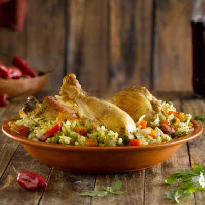

|  |
Arroz con Pollo |
- 4 Unidades de Presa de pollo (con o sin piel)
- 125 grs. de Cerveza negra de malta
- 2 Cucharaditas de Aceite de oliva extra virgen "Olivos del salar"
- 270 grs. de Arroz blanco
- 375 grs. de Agua
- 320 grs. de Arvejas
- 100 grs. de Zanahoria en cubitos
- 70 grs. de Pimentón en cubitos
- 1 Taza de Cilantro en hojas licuado
- 1 Pizca de Sal fina
- 1 Pizca de Pimienta
|
- Maceramos el pollo con la cerveza durante 30'.
- Calentamos la Sartén tapada 3' a fuego medio.
- Rociamos con 2 cdas de aceite de oliva. Luego, agregamos el pollo y lo doramos de ambos lados a fuego fuerte. Retiramos y reservamos.
- En la misma Sartén freímos el arroz y luego agregamos nuevamente el pollo, el agua, las verduras y el cilantro. Condimentamos.
- Tapamos y continuamos a fuego corona hasta finalizar la cocción.
|